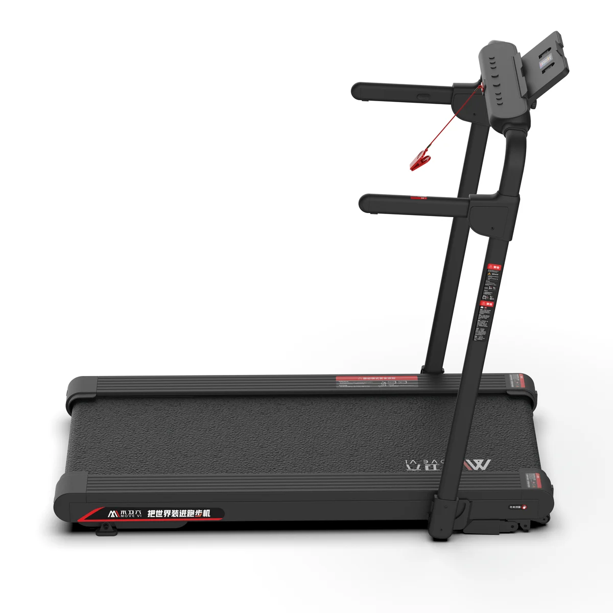
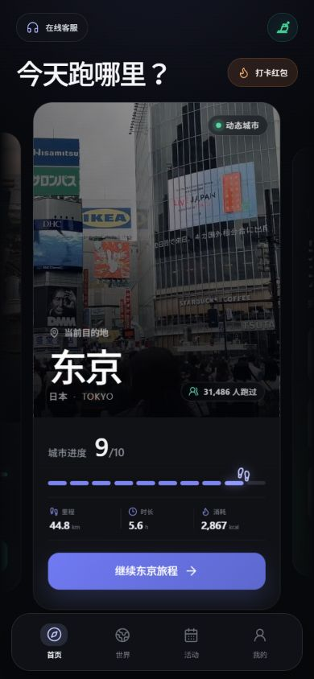

MOVEVI WORLD / 01
MOVEVI WORLD / 01UNITED STATES / 美国


 MOVEVI TS3智能运动硬件 ↗
MOVEVI TS3智能运动硬件 ↗
真实城市路线 × MOVEVI APP × 智能运动硬件
买跑步机时，我们想改变生活。
后来，它却渐渐成了晾衣架。
健康的愿望还在。
只是下一次开跑的动力，消失了。
 SAME HOME. A NEW REASON.
SAME HOME. A NEW REASON.
同一个家，另一种出发。
产品渲染 × 城市氛围示意改变运动的动力结构
木卫六想让好奇心，分担意志力的负担。
02 / 让好奇心驱动运动，人天生向往未知。
195个国家和地区
我们的城市实景建设目标
MOVEVI WORLD / 01UNITED STATES / 美国
 MOVEVI WORLD / 02
MOVEVI WORLD / 02FRANCE / 法国
 MOVEVI WORLD / 03
MOVEVI WORLD / 03UNITED KINGDOM / 英国
03 / 产品与验证 · PRODUCT
运动 × 探索 × 即时反馈，让一次出发连成完整体验。

03 / MOVEVI APP03.1 / 我们如何把世界变成运动体验
街道、路口与城市生活，
让风景成为目的地。

清楚的开始、暂停与记录，
让每一次投入得到回应。
产品实拍承载日常运动，
通过真实使用逐步改善体验。
产品体系与研发方向；具体功能、设备联动及可用内容以实际交付版本为准。
03.2 / 亲自体验
从目的地到路线，从开始到完成。
每一步，都向下一站靠近。
下一站，由你选择。
03.3 / 智能运动硬件
从日常走步，到尽兴奔跑。
找到适合你的节奏，也适合家的那一款。
从走步到快跑，让每一天都有自己的节奏。
TS3 / 02 MODELS产品图片包含实拍与渲染展示。选购前可联系客服确认在售配置、App 适配与体验安排。
 城市运动氛围示意
城市运动氛围示意03.4 / 让真实使用，回答效果
我们关注的，不只是一次体验。
更是运动能否一次次回到日常。
一个目的地，能否让今天更容易迈出第一步。
新的发现，能否让运动更有吸引力。
结束之后，是否还期待下一次出发。
记录真实世界，拒绝用虚假的想象替代真实体验。
保留内容来源、城市与拍摄信息，让每一条路线有迹可循。永远保持好奇，把未知变成下一次出发的理由。
持续提供新的路线与发现，让下一站清楚可见。不追求一次性的刺激，而是持续创造让人愿意回来运动的价值。
关注重复使用与持续运动，让新鲜感之后仍有值得回来的理由。从真实运动体验出发，而不是从功能堆叠出发。
让选择、开始、运动与寻找下一站，都更简单顺畅。让技术降低运动门槛，而不是制造新的复杂。
操作简单，提示易懂；保留暂停、调整与退出的主动权。连接世界、内容创作者、城市、运动者与技术，让更多人参与建设这个全球运动世界。
尊重内容贡献者与城市文化，一起拓展探索的可能。在家就能开始，按自己的节奏前进。
把一次完成，变成下一次出发的起点。
运动的价值
无需安排一次远行，也能看见陌生的街道。
为普通的一天，留下一点新的期待。
这是木卫六希望创造的体验价值。具体运动感受因人而异，不承诺特定减重或健康结果。
足不出户，跑遍全球。
木卫六，让每一次奔跑，都成为一次探索世界的旅程。